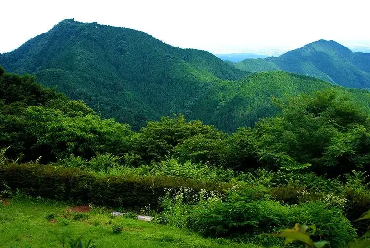

Hinode, Tokyo: things to do, food and stays
Hinode · Tokyo
Hinode
Highlighted on the Tokyo map.

Sights
Dining
Shougai Seishun no Yu Tsurutsuru Onsen Oshokuji Dokoro
生涯青春の湯 つるつる温泉 お食事処

Japanese restaurant in Hinode, Tokyo.
Fukushima Bokujou Soft Shop
福嶋牧場ソフト売店

Restaurant in Hinode, Tokyo.
Dandelion
ダンデリオン

Sweets and bakery shop in Hinode, Tokyo.
Jikaseimen no Mise MOJO HAND
自家製麺の店 MOJO HAND

Noodle restaurant in Hinode, Tokyo.
Ramen Kairikiya Ionmoru hinode ten
ラーメン魁力屋 イオンモール日の出店

Noodle restaurant in Hinode, Tokyo.
Gyoza Shokubo Yamato Ionmoru hinode ten
餃子食坊やまと イオンモール日の出店

Noodle restaurant in Hinode, Tokyo.
Nikumarushoten Ionmoru hinode
肉丸商店 イオンモール日の出

Meat restaurant in Hinode, Tokyo.
Ramen Shop Hirai ten
ラーメンショップ 平井店

Noodle restaurant in Hinode, Tokyo.
Koshindo
幸神堂

Sweets and bakery shop in Hinode, Tokyo.
Shoka Hanten
松華飯店

Noodle restaurant in Hinode, Tokyo.
Hinode Machi Shizen Kyuyou Mura Sakana En
日の出町自然休養村さかな園

Izakaya or bar in Hinode, Tokyo.
Musashino Udon Komugi Bare Ionmor Hinode Ten
武蔵野うどん小麦晴れ イオンモール日の出店

Noodle restaurant in Hinode, Tokyo.
Don Don
ドン・ドン

European restaurant in Hinode, Tokyo.
Organic Cafe koto-koto

Cafe in Hinode, Tokyo.
Soba Dokoro Asahiya
そば処 朝日屋

Noodle restaurant in Hinode, Tokyo.
Bread Garden Ionmoru hinode ten
ブレッドガーデン イオンモール日の出店

Meat restaurant in Hinode, Tokyo.
Gohan Dokoro Ibuki
ごはんどころ いぶき

Japanese restaurant in Hinode, Tokyo.
Kirin Kan
きりんかん

Cafe in Hinode, Tokyo.
Cafe Veloce Ionmoru hinode ten
カフェ・ベローチェ イオンモール日の出店

Cafe in Hinode, Tokyo.
Ginshari Gokoku Ionmoru hinode ten
銀しゃり五穀 イオンモール日の出店

Japanese restaurant in Hinode, Tokyo.
Marugame Seimen Ionmo-ru hinode ten
丸亀製麺 イオンモール日の出店

Noodle restaurant in Hinode, Tokyo.
Starbucks Coffee Ionmoru hinode ten
スターバックス・コーヒー イオンモール日の出店

Cafe in Hinode, Tokyo.
Miyabi Kobo Dai Tama Umaimono Kan
みやび工房 大多摩うまいもの館

Restaurant in Hinode, Tokyo.
VEGEGO Ionmoru hinode ten
VEGEGO イオンモール日の出店

Chinese or Asian restaurant in Hinode, Tokyo.
Sumibi Yaki Wa Meshi Sho Shinpachi Shokudo Ionmor Hinode Ten
炭火焼和めし処 しんぱち食堂 イオンモール日の出店

Japanese restaurant in Hinode, Tokyo.
Hinosaku
ヒノサク

Cafe in Hinode, Tokyo.
AEON CINEMA Hinode
イオンシネマ 日の出

Restaurant in Hinode, Tokyo.
O Shokuji Tokoro Hanawa
お食事処 花輪

Restaurant in Hinode, Tokyo.
Chashu Ya Musashi Ion mooru hinode ten
ちゃーしゅうや武蔵 イオンモール日の出店

Noodle restaurant in Hinode, Tokyo.
Benitora Gyoza Bo Ion mooru hinode ten
紅虎餃子房 イオンモール日の出店

Noodle restaurant in Hinode, Tokyo.
Ringer Hut Ionmoru hinode ten
リンガーハット イオンモール日の出店

Noodle restaurant in Hinode, Tokyo.
Tonkatsu Wakou Ionmoru hinode ten
とんかつ和幸 イオンモール日の出店

Meat restaurant in Hinode, Tokyo.
Gatten Zushi Ionmoru hinode ten
がってん寿司 イオンモール日の出店

Seafood restaurant in Hinode, Tokyo.
BURGER KING Ionmoru hinode ten
BURGER KING イオンモール日の出店

Izakaya or bar in Hinode, Tokyo.
Houraiya
宝来家

Japanese restaurant in Hinode, Tokyo.
Shoku no Eki Hinode ten
食の駅 日の出店

Restaurant in Hinode, Tokyo.